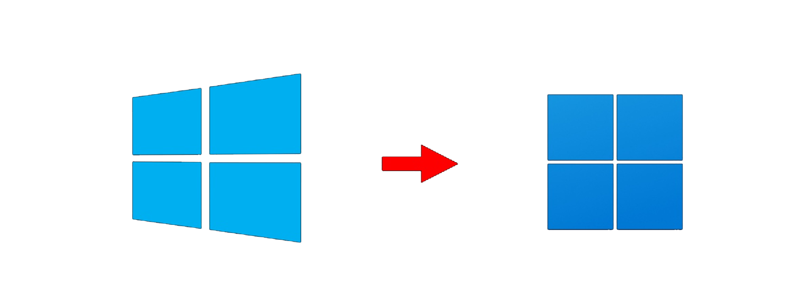

Overview
Windows 11 is finally upon us... and I could not be more excited! Windows 11 was officially announced to the public on June 24th, 2021. There has not been an official release date yet, but it is rumored to be in October of this year. This will be a free upgrade if you already own a copy of Windows 10. If you want to get your hands on early you can sign up for Microsoft insider program and download the beta version of the software today!
Initial Thoughts
My initial thoughts on Windows 11 are... centered! The task bar and start menu are both now centered on the screen! With come lots of other UI changes including, rounded corners on windows, new icons, updated task bar, refreshed settings page and more! Windows has kind of taken a Mac approach with their new UI, which is not a bad thing.

New Features
There are several new features coming with Windows 11 that make it feel like an actual upgrade instead of just a Windows 10 update. Some of the main new features are:
- - Native Android app support
- - Widgets
- - Microsoft Teams integration
- - Xbox features for a better gaming experience
- - Better Multitasking
System Requirements
- - Processor: 1 gigahertz (GHz) or faster with 2 or more cores on a compatible 64-bit processor or System on a Chip (SoC)
- - RAM: 4 gigabyte (GB)
- - Storage: 64 GB or larger storage device
- - System Firmware: UEFI, Secure Boot capable
- - TPM: Trusted Platform Module (TPM) version 2.0
- - Graphics Card: Compatible with DirectX 12 or later with WDDM 2.0 driver
- - Display: High definition (720p) display that is greater than 9” diagonally, 8 bits per color channel
- - Internet connection and Microsoft accounts: Windows 11 Home edition requires internet connectivity and a Microsoft account to complete device setup on first use.